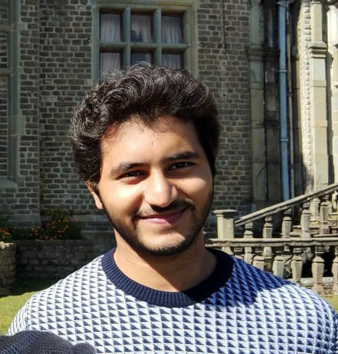
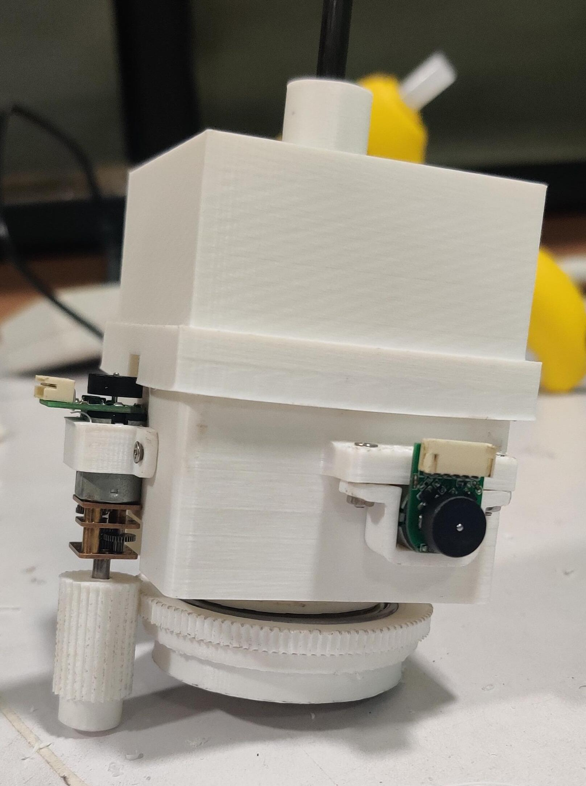
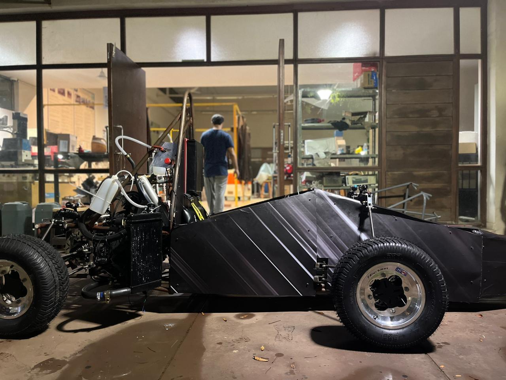
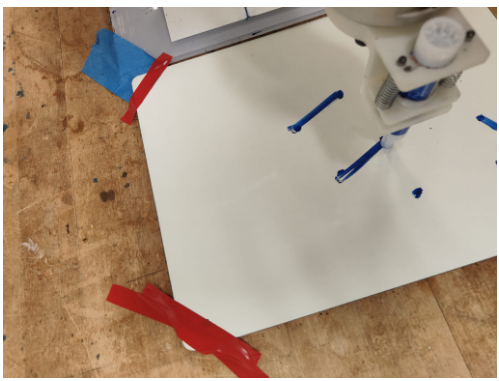
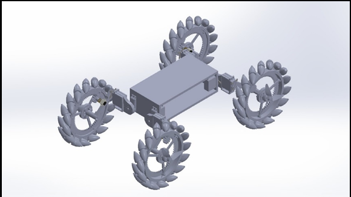

About Me

Summary
Hello there! I am a Robotics Graduate Student at Johns Hopkins University.
My interests lie at the exciting intersection of robotics and mechanics. I am focused on engineering novel design solutions for complex robotic applications and leveraging Reinforcement Learning to enable them to operate with robust, intelligent autonomy.
Education
Master of Science in Robotics
Bachelor of Technology in Mechanical Engineering
Technical Skills
Programming Languages
- C
- C++
- Python
- MATLAB
Frameworks
- ROS2
- MoveIt
- OMPL
- PyTorch
- OpenCV
- CVXPY
- Stable-Baselines3
Tools
- Bash
- Git
- Linux
- Docker
- Simulator (Gazebo, MuJoCo, Unity)
Hardware Platform
- Embedded Systems (ESP32, Raspberry Pi, Arduino)
- Stereo Camera
- UR5e
- Meta Quest
Design & Simulation
- SolidWorks
- CREO
- ANSYS
- Siemens NX
- 3D Printing
- Machining
Experience
- Cross-Platform Teleoperation Architecture: Engineering a custom, low-latency TCP bridge between Unity and ROS 2, streaming real-time Gazebo camera feeds directly into a Meta Quest 3S spatial interface.
- Real-Time Inverse Kinematics Control: Developing a C++ MoveIt Servo node that translates continuous 6-DOF human hand coordinates into velocity-driven joint commands for a UR5 industrial robot arm.
- In my role as a Graduate Research Assistant at the AMIRo Lab, I am developing a high-precision mechanical positioning system for small animal FLASH X-ray therapy. I am implementing on a novel dual-arm robotic configuration that uses 3D-printed collimator assemblies. I have successfully validated the system's alignment, achieving 20-40 micrometer accuracy as measured by a Keyence 3D surface profiler
- I have designed a multi-modal mouse bed using Creo Parametric, specified for 80mm bi-directional translation, 90-degree rotation, and a 250g load capacity (with < 0.4mm deflection). This system integrates hybrid - manual or electronic control, variable collimator patterns for targeted tumor ablation, and multi-nozzle anesthesia delivery. The resulting modular platform is compatible with both micro-CT imaging and FLASH therapy systems, which enables a seamless workflow for image-guided preclinical radiotherapy research

- Designed a novel, aperture-style compliant flexure gripper for 2-5mm needles, achieving 0.1mm insertion accuracy and a 24% weight reduction over previous designs. The PLA-based compliant mechanism, actuated by three high-torque motors, allows for dynamic diameter adjustment while maintaining safe gripping forces, all controlled by a Raspberry Pi
- Successfully integrated the custom 2-DOF needle driver into a learning-based planning workflow on a KUKA LBR iiwa robotic arm. This work delivered the complete end-effector integration, safety interlocks, and motor controls required to demonstrate an autonomous, minimally invasive stereotactic brain biopsy on tissue-mimicking phantoms

- Led 18-member team as captain designing formula student race car, driving a erodynamic development achieving 150kg downforce at 100km/h through CFD optimization in OpenFOAM with k-ω SST turbulence modeling. Designed lightweight tubular chassis in Siemens NX achieving torsional rigidity of 1500 Nm/deg while maintaining optimal weight distribution.
- Optimized suspension kinematics in LOTUS for 2° camber gain, <0.5° bump steer, 45/55 weight distribution, 1.5Hz ride frequency, and 2.2Hz roll frequency. Validated vehicle dynamics through 60 km/h testing achieving 1.4g lateral acceleration, 12m turning radius, and 0.8g braking deceleration.
- Operated and monitored 3 automated manufacturing processes for pharmaceutical products.
- Executed inspection tests on Active Pharmaceutical Ingredients (APIs) using High-Performance Liquid Chromatography (HPLC).
Projects
- Engineered a custom Soft Actor-Critic (SAC) algorithm from scratch to solve contact-rich manipulation tasks, integrating a bespoke MuJoCo environment to train a Franka Panda robot Synthesized robust control policies to align randomly oriented rigid objects to a fixed goal configuration through non-prehensile pushing, achieving more than 95% success rate validated via TensorBoard analytics
- Architected a simulation of a custom 3DOF free-floating space arm in MuJoCo, creating a stable testbed to accurately model the system non-linear dynamics. Implemented a control policy using Stable-Baselines3 and Hindsight Experience Replay to resolve sparse-reward trajectory problems, achieving more than 99% base stability and 0.1 m end-effector precision validated via TensorBoard
- Engineered a custom moveit_core planner plugin for ROS 2, implementing the Expansive Space Trees (EST) algorithm in C++. The planner's expansive strategy was driven by a roulette wheel selection mechanism to bias node expansion towards high-weight, unexplored regions. New states were generated using normal distribution sampling around selected nodes, and a k-d tree was implemented for efficient nearest-neighbor queries within the 6-DOF configuration space. The system was fully integrated with a UR5e robot, leveraging MoveIt's PlanningScene for state validation and collision-checking, and published visualization_msgs for real-time tree and trajectory visualization in RViz
- Developed a real-time Extended Kalman Filter (EKF) in C++ for 6-DOF robot localization by implementing nonlinear system dynamics and measurement models to fuse GPS/IMU data. The algorithm, which integrated geodetic coordinate transformations and adaptive noise covariance matrices, achieved 0.5-meter positioning accuracy on uneven terrain (30° slopes) and reduced position drift from 5m to 0.3m, all while maintaining a 10Hz update rate for autonomous navigation

- Engineered a comparative trajectory tracking framework in MATLAB for a UR5 manipulator to execute a rotation-invariant, multi-segment Cartesian "place-and-draw" task. The framework benchmarked three distinct kinematic controllers: (1) a full Analytical IK solver, derived from DH parameters and Paden–Kahan subproblems with optimal selection from 8 solutions; (2) a Resolved-Rate controller (Jacobian-based); and (3) a Jacobian Transpose controller. Robustness was achieved by incorporating manipulability-based singularity avoidance and tuning controller gains (K) and time steps (Δt) for stable, high-fidelity path tracking
- Built a perception pipeline for monocular mapping in 3D with semantic labeling, combining ORB-SLAM3 with ROS for mapping and YOLOv7 for object detection across a custom dataset of over 1,000 images and depth estimation. Developed a program for camera calibration to extract the intrinsics of the camera using OpenCV and a python script to stream raw image inputs from Raspberry Pi 4 to ROS bag files for consistent input for testing and analysis
Miscellaneous Projects

- Conceptualized and designed a novel bio-inspired morphing robot system through comprehensive biomimetic research to identify 8 distinct operational configurations for versatile terrain adaptation. Developed detailed mechanical design integrating dual locomotion systems: mecanum wheels for omnidirectional ground movement and quadcopter propellers for aerial capabilities, enabling hybrid air-ground movement schemes
- Created 3D CAD models and engineering drawings specifying actuator placement, joint mechanisms, and transformation sequences between configurations. Implemented basic Arduino control code for manual switching between ground-based car configuration and aerial drone configuration through servo motor actuation. Validated design feasibility through kinematic analysis and structural simulations of the morphing mechanisms
- Implemented the Park & Martin algorithm (AX=XB) in MATLAB to solve the hand-eye calibration problem for a UR5 (eye-in-hand)
- Achieved <0.1 mm translation error and <0.01 radian rotation error by processing real-world transformation data from ROS (tf2_echo)
- Designed and fabricated an Arduino-based ROV with dual control modes (Bluetooth smartphone app and I2C joystick)
- Integrated a GPS module to implement a geofencing feature, ensuring the ROV automatically returned to a predefined operational area
- Led the university's robotics club, supervising 10+ technical projects and mentoring 8 junior team members in robotics design and development
- Engineered and fabricated an all-terrain rover for a national competition, designing 3D-printed components to navigate 60° inclines and 15cm deep water
- Managed the team's budget and procurement timeline for all components
Publications
Robotics and autonomous systems have aided space exploration by allowing breakthrough research as well as satisfying human curiosity and the desire to explore novel places. This paper gives an overview of robotics in space as a fast-developing area, with a focus on the fundamentals. Concepts, terminology, historical context, and evolution are all covered in this section. It also has a technical roadmap taking into account important problems and priorities of the field over the coming decades. Space robotics is a critical enabler for a variety of future robotic and crewed missions, space missions, as well as knowledge and technology transfer opportunities. Space robotics stimulates present and future generations to explore and critically analyses Science, Technology, Engineering, and Mathematics from a larger humanitarian perspective. Space robotics holds numerous critical enablers for a variety of future robotic and crewed space missions, as well as chances for knowledge and technology transfer to a variety of terrestrial industries.
Patents
A novel design of Front Upright for formula student race car